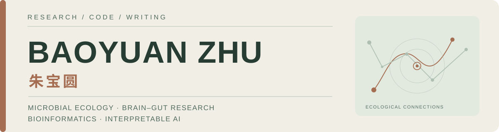

GitHub profile preview · Static mockup
这里是 GitHub Profile README 的设计预览，不代表 GitHub 个人主页已经更新。该 README 需要放入一个名为 zbyloveyj/zbyloveyj 的公开仓库才能显示在 Overview 顶部。
▤ zbyloveyj / README.md

Hello / 你好 👋
I'm Baoyuan Zhu (朱宝圆), a PhD candidate at South China University of Technology. I develop computational approaches to study microbial ecosystems, psychiatric heterogeneity, brain–gut associations and interpretable AI.
我是朱宝圆，华南理工大学博士研究生。关注微生物生态、精神疾病异质性、脑肠关联和可解释人工智能，希望通过可复现分析建立可信的跨尺度联系。
Research interests / 研究方向
- Microbial ecology · 微生物生态 — metagenomics, ecological factors, reference models
- Brain–gut systems · 脑肠关联 — symptoms, cognition and neuroimaging
- Computational biology · 计算生物学 — multi-omics, microbial genetics, interpretable learning
Selected publications / 代表论文
Connection-Level Multi-Omics Reveals Cerebellar-Cortical Dysconnectivity and Divergent Molecular Signatures Across Major Psychiatric Disorders ↗
BrainNetAnno · Online 3 October 2026 · Co-author / 合作作者
Dissecting the Ecological Structure of Health and Disease in the Global Gut Microbiome ↗
20,178 metagenomes · 36 countries · microbial ecological factors
The Brain–Gut Health Initiative (BIGHI) ↗
Prospective multimodal framework for psychiatric research
Multi-kingdom microbial changes in schizophrenia ↗
Clinical associations beyond bacterial profiling
Open research & projects / 科研代码与开放资源
| Project | Focus |
|---|---|
| Microbial Ecological Factors | Continuous ecology modeling · 微生物生态因子 |
| CLEAR-Microbiome | Contrastive microbiome–clinical analysis · 对比表征学习 |
| Normative Microbial Networks | Healthy-reference ecosystems · 规范生态网络 |
| BioAgentLab | AI agents and education · 科研智能体与教学 |
Beyond the lab / 科研之外
I enjoy scientific writing and open education. I am also happily in a relationship, and value the ordinary life outside research.